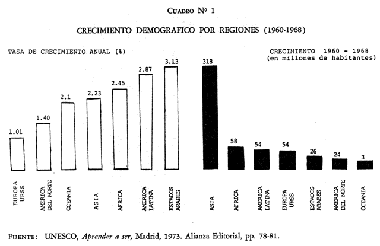
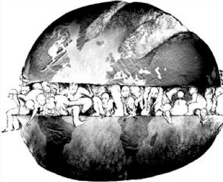
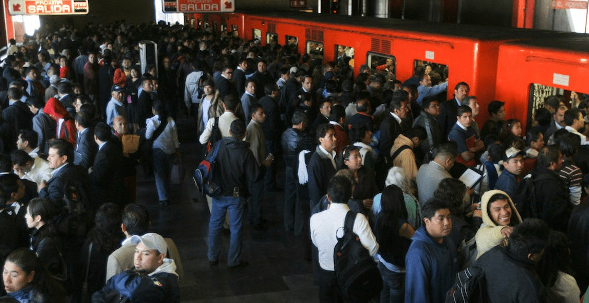

LA EVOLUCION DEL PROBLEMA DEMOGRAFICO
Con frecuencia se escucha decir que población y desarrollo son elementos indisolublemente unidos, son términos
de una misma ecuación. Basta un ligero vistazo a las estadísticas mundiales para darse cuenta de la estrecha correlación
que existe entre ellos: los países que tienen más elevados índices de desarrollo son los que mantienen tasas de crecimiento
más reducidas, en tanto que, paradójicamente, los países con menor desarrollo son los que crecen más rápidamente, inundándose,
por así decirlo, en un verdadero diluvio humano.
En naciones con altos índices de natalidad y con una expectativa de vida relativamente baja, en comparación con las potencias
industrializadas -más de un 30 por ciento de la población es menor de 10 años, lo cual significa que no participan activamente
en el proceso productivo-. Si se compara este dato con el proporcionado para los países desarrollados, se encuentra que estos
últimos tienen una población menor de 10 años que fluctúa entre el 15 y 18 por ciento. Es decir, la población económicamente activa
es más significativa en los países ricos que en los pobres.
En la mayoría de los países en vías de desarrollo, el factor demográfico, al quedar enmarcado dentro del contexto general de desarrollo
de la sociedad, presenta características de complejidad que son comunes a sus problemas políticos, económicos y sociales.
El proceso de renovación de la especie humana se ha visto afectado por un conjunto de fuerzas que resultan de la acción de factores
económicos, sociales, culturales, sicológicos y de otra índole. Entre estos factores se encuentran las costumbres, las tradiciones, las
creencias religiosas, pero también, la forma de adaptación de la sociedad a los cambios en los recursos económicos y a los cambios en los
sistemas de valores sociales y personales. Todos ellos, en su conjunto, han modificado directa o indirectamente los niveles y el comportamiento
de las variables demográficas: natalidad, mortalidad y migración.
Dada la multiplicidad de criterios cuantitativos y cualitativos implícitos en la noción de desarrollo, el estudio de las interrelaciones del
cambio demográfico, dentro del marco del desarrollo económico y social, se contrae el análisis de variables de tipo cuantitativo con las que
se operacionaliza este concepto de desarrollo.
Estudios de este tipo son aquellos cuyo propósito es investigar la relación existente entre población y recursos físicos,población-alimentación
,población-educación, población-nivel de vida, etc. O bien aquellos que pretenden estudiar la acción de los factores económicos, sociales y de
otro tipo, sobre la modificación de una o todas las variables demográficas. A tales modificaciones así como a los efectos concomitantes se les
designa con el nombre de revolución demográfica.

Población-alimentación
Un estudio realizado por el francés Pierre George señala que en los países en donde madres e hijos son mejor atendidos y en donde el promedio
de vida es más elevado, ocurren la mitad de los nacimientos que tienen lugar en aquellos donde hay pocas probabilidades de sobrevivir.
Esto quiere decir que nos enfrentamos a la aparente paradoja de que la disminución de la mortalidad, a través de una mejor alimentación, reduce
el índice de aumento demográfico en vez de elevarlo. Tal afirmación, resultado del estudio citado, no logra, sin embargo, aclarar el porqué de
esta situación.

Para las masas marginadas de la mayoría de los países del Tercer Mundo, el procrear no es un lujo, es parte básica del instinto humano por conservar
la vida propia. En una familia dada, el tener más hijos significa la posibilidad de tener mayor número de brazos para trabajar.
Población-desarrollo
Aunque la prioridad de la agricultura en los esfuerzos de los países subdesarrollados por rebasar esta etapa fomenta una estructura social que
tradicionalmente produce los más elevados índices de natalidad, es el camino más rápido para lograr un crecimiento económico. Ahora bien, en el caso
específico de Formosa, que dirigió sus esfuerzos hacia una agricultura vigorosa, se dio la situación de que al modificarse las condiciones de vida del
individuo del sector agrícola, como consecuencia del crecimiento económico, también se cambió la mentalidad del mismo, llevándolo a percatarse de que
el menor número de hijos redunda en su propio interés económico.

Población-educación
Estos estudios parten de la hipótesis de que a mayor educación mayores son las posibilidades de un país de acelerar su crecimiento económico y, como
consecuencia, sus habitantes más pronto reconocerán que su propio nivel de vida está determinado, en parte, por el número de hijos que tengan. En los
estados federales de la India que tienen el más bajo nivel de educación, como Uttar Pradesh, las mujeres se casan, en promedio, seis años más jóvenes
que las de Karela, que es el Estado en donde el nivel de educación es más elevado. Ello significa de uno a dos hijos menos por mujer.
Es importante señalar que la existencia o no del problema, tal y como lo ilustran los ejemplos ya citados, tiene que plantearse no sólo en función de
variables demográficas, sino más bien en relación con variables no demográficas y dentro de una dimensión espacial-temporal.
En junio de 1973, un grupo de expertos latinoamericanos en materia de población afirmó que este problema es un factor influyente, pero no el único, en
la actual situación crítica de América Latina. Su relevancia, se dijo, proviene más bien de determinados marcos estructurales.
La calidad y la disponibilidad de la información y los cambios estructurales que el país registró son, entre otras razones, las que justifican, en esta
ocasión, que el estudio de los componentes demográficos y de sus efectos esté referido al periodo 1940-1970.